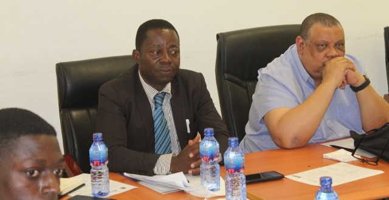
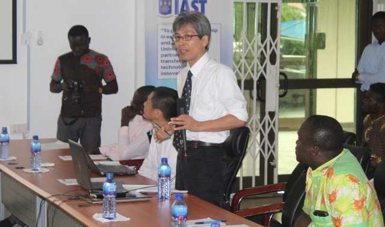
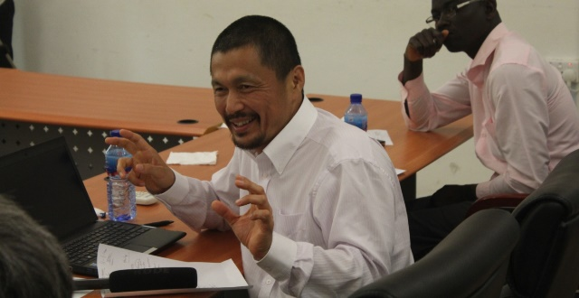
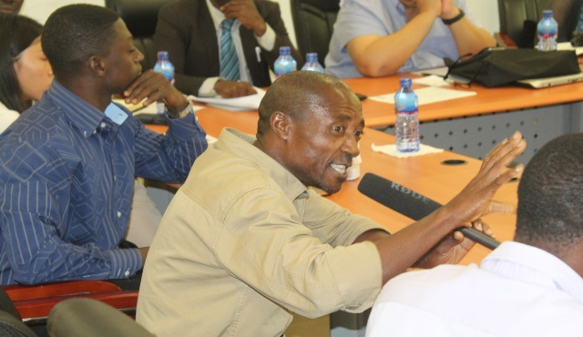
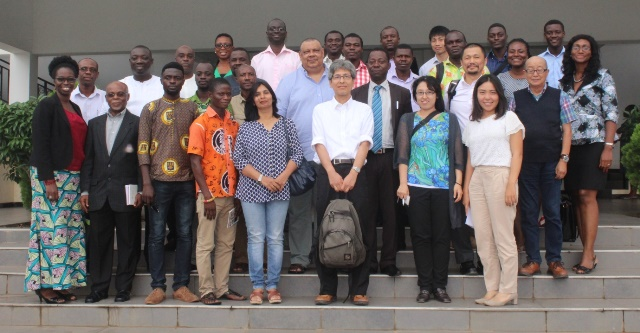

IAST HOSTS SAFTA SEMINAR
REPORT ON THE SEMINAR ON “ADAPTING CACAO BASED AGRICULTURE TO CLIMATE CHANGE FOR POVERTY ERADICATION AND SUSTAINABLE DEVELOPMENT IN AFRICA – A PROPOSAL OF JAPANESE BRAZILIAN AGROFORESTRY APPROACH”
On 24th July, 2017, the Institute of Applied Science and Technology in partnership with its collaborators from the Tokyo University of Agriculture and Technology (TUAT) held a seminar on improving cocoa production in Ghana. The seminar was dubbed “Adapting Cacao Based Agriculture to Climate Change for Poverty Eradication and Sustainable Development in Africa – A Proposal Of Japanese Brazilian Agroforestry Approach”. The seminar was attended by faculty members from the University of Ghana, representatives from the Tokyo University of Agriculture and Technology, cocoa processors and selected media houses.
The Director of the Institute of Applied Science and Technology, Professor Oduro Nkansah thanked participants for honouring the invitation and informed participants of the aims of the seminar. He stated how Ghana`s cocoa has lost its position as lead exporter due to recent decline in growth rate even though it constitutes to 9.7% of the country`s GDP. He finally thanked participants for making time out of their busy schedules to participate in the seminar.

On the left, Prof. George Oduro Nkansah, Director, Institute of Applied Science and Technology
Professor Gordon, Director of the Institute of Environment and Sanitation Studies (IESS), chairperson of the seminar, informed participants how the SAFTA project was consistent with the sustainable development goals (SDG) and how its successful implementation can address all the seventeen (17) sustainable development goals. He advised the coordinators to allow all stakeholders to co-design and co-develop the project. He concluded by proposing the three people helix model, which he said involves academia, industry and government working together, this he said will foster real valuable change to cocoa production.
Professor Dr. Atushi Chitose, Vice-Dean, Institute Of Agriculture, Tokyo University Of Agriculture And Technology (TUAT) started by briefing participants on the vision of TUAT and further elaborated on the academic partnerships between the two Universities. Professor Chitose explained that the word SAFTA stands for (Sistema Agroflorestal de Tomé-Açu), which he indicated was a successional cocoa-based agroforestry system developed by Japanese-Brazilian farmers in the Amazon region with the aim of enhancing livelihoods, reduce hunger and ensure a more sustainable, diversified cocoa based farming system which will build resilience to climate change, food insecurity and price instability in international commodity markets. He hinted that, the project was expected to cost three million (3,000,000) Japanese Yen annually which was equivalent to USD25, 000 annually.

Professor Dr. Atushi Chitose, Vice-Dean, Institute Of Agriculture, Tokyo University Of Agriculture And Technology (TUAT)
Professor Dr. Maasaki Yamada made a presentation on adapting agriculture to climate change for increased sustainable income and reduction of hunger. He noted that adopting the SAFTA approach will ensure efficient land use and better management of trees, crops and animals which would lead to diversification and sustainable agriculture. Professor Dr. Yamada stressed the need to utilise evergreen technologies that will tackle the problems created by land degradation and deforestation and proposed measures that should be adopted to enhance the adaptability of cocoa trees which include, selecting cocoa varieties and companion trees/crops that are tolerant to high temperatures at crop level; at the farm level he proposed an increase in shade to protect the cocoa trees against high temperatures and to diversify farmers' incomes as a buffer against market and environmental risks; and at the national and regional policy level he proposed the implementation of agricultural and forest policies that support the strengthening of existing cocoa farms where climatic conditions permit and the siting of new cocoa plantings on previously deforested land, that create incentives for farmers to retain and plant native trees in their farms.

Professor Dr. Maasaki Yamada delivering a presentation
In the interactive session Professor Gordon added that, the team can work with researchers at Kade to set up a demonstration farm where there would be no issues on land tenure but a memorandum of understanding will be required. He urged the coordinators to look at projects like People Life Environment Change (PLEC) and Sustainable Land Management (SLM) to ensure maximum benefits.

A participant making a submission
In closing remarks the chairman tasked coordinators of SAFTA to be proof resilient in order to create zero waste in cocoa production and also thanked participants for their active participation and contributions.

A group picture of the participants of the seminar